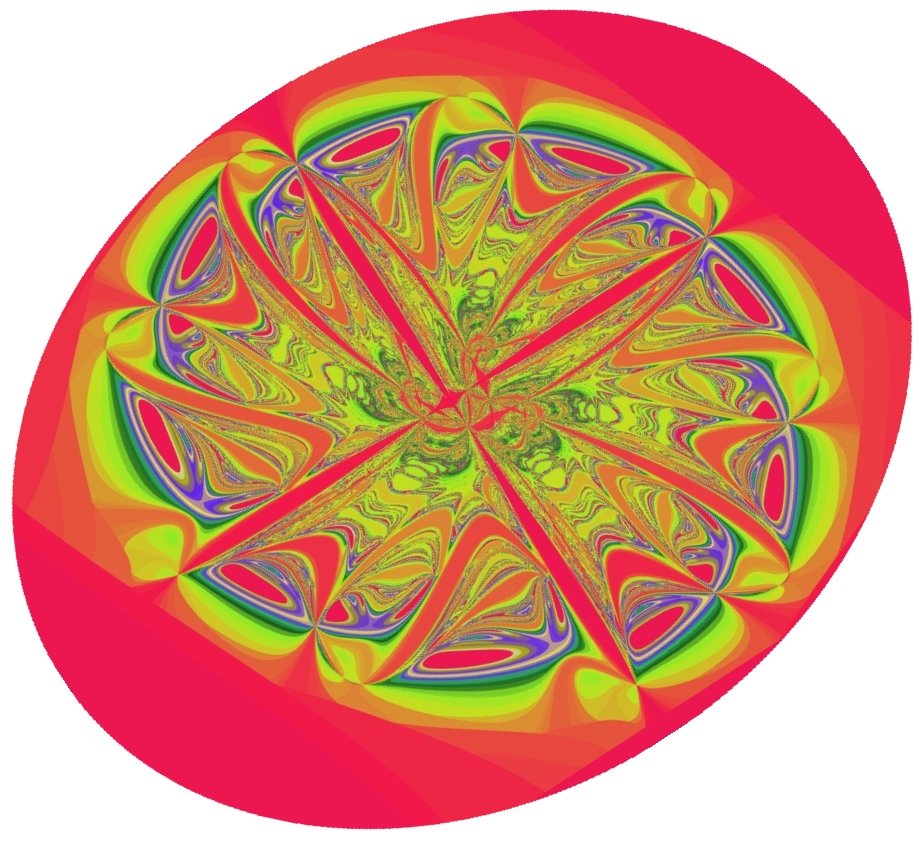

| Spring 2006
114 Mcallister Building Fridays, 12:20pm-1:30pm |
 |
This informal 30-minute seminar is designed to allow students to meet and interact with CCMA researchers and outside visitors. While technically at an introductory graduate level, the seminar addresses front-line research problems.
| DATE | SPEAKER | TITLE |
| 01/13 |
Mingzhong Wu
Colorado State University |
Spin Waves in Magnetic Thin Films |
| 01/20 |
Weiqing Ren
Courant Institute, NYU |
Introduction to rare events |
| 01/27 |
Bernard Deconinck
Applied Math, University of Washington |
Computing spectra of linear operators: an introduction. |
| 02/03 |
Pierre Gremaud
North Carolina State University |
Numerical investigation of vacuum formation in compressible flows. Introduction. |
| 02/10 |
David Hoff
Indiana University |
Introduction to Lagrangean Structure and Propagation of Singularities in Multidimensional Compressible Flow |
| 02/17 |
Xiantao Li
Penn State |
Introduction to molecular dynamics |
| 02/24 |
Edward Green
Economics, Penn State |
Pairwise trade, money holdings, and the geometric probability distribution |
| 03/03 |
Vincent Crespi
Physics, Penn State |
What do carbon nanotubes, pineapples, cacti and magnets on bearings have in common? Rotons, solitons and dynamical phyllotaxis in a magnetic cactus. |
| 03/17 |
Yuxi Zheng
Penn State |
Conservation Laws and Multi-d Shock Wave Theory. |
| 03/24 |
Wen Shen
Penn State |
Discontinuous ODEs and applications |
| 03-31 |
Helge Holden,
NTNU/NUST |
About the Abel Prize; with special focus on Peter Lax, Abel Laureate 2005 |
| 04/07 |
Alberto Bressan
Penn State |
The ski, the swing, and locomotion in fluids |
| 04/14 |
Yanxi Liu
School of Computer Science, Penn State |
Computational symmetry: Frieze and Wallpaper Groups and their applications |
| 04/21 |
Eric Mockensturm
Mechanical Engineering, Penn State |
On The Nonlinear Mechanics of Carbon Nano-Structures Using The Consistent Atomic-scale Finite Element Method |
| 04/28 |
Jerry Bona
University of Illinois, Chicago |
Introduction to dispersion in nonlinear wave equations |
| 05/05 |
Michael Shearer
NC State University |
The modified KdV-Burgers equation: shocks and traveling waves. |
Last modified on Tue Mar 21 9:42 EDT 2006 by Anna Mazzucato<mazzucat AT math DOT psu DOT edu>